The Website
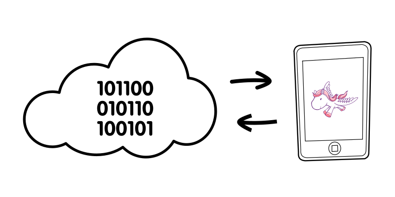The Other Side
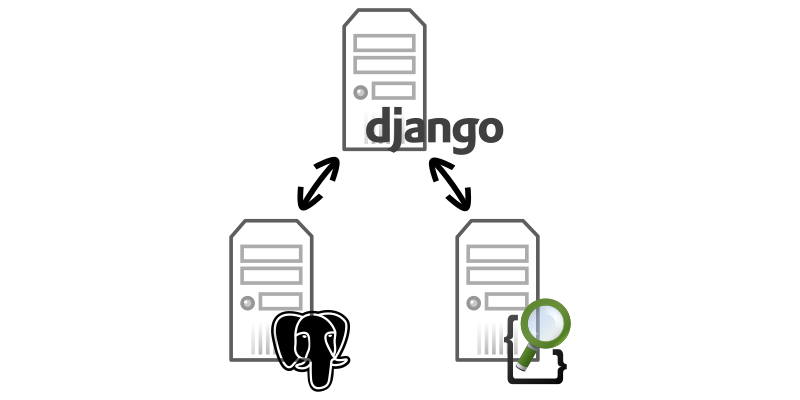The Deploy
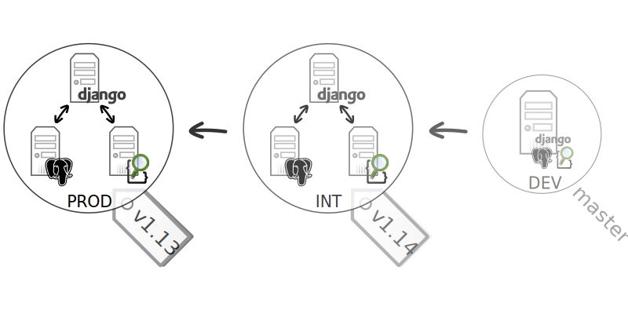The CI
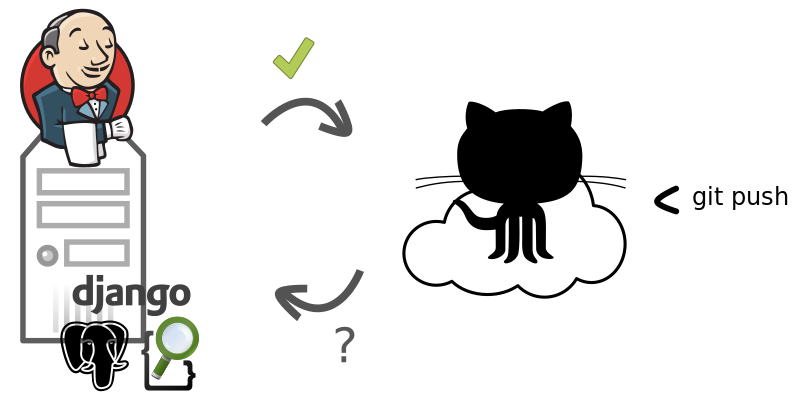The Dev
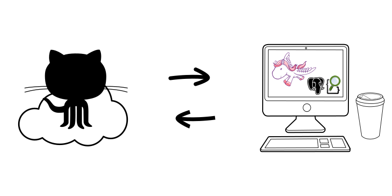The Stack
- Python 2.7
- Django 1.6
- Postgresql 9.1
- Elasticsearch 0.9
The V2
- Python 3.4
- Django 1.7
- Postgresql 9.4
- Elasticsearch 1.3
The Dev
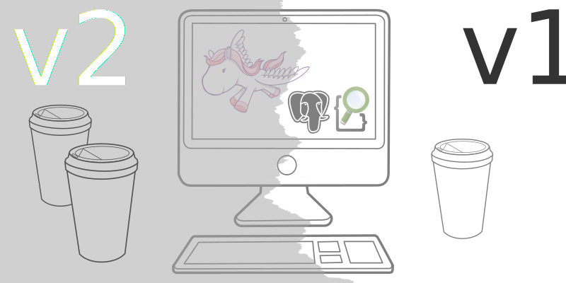The CI
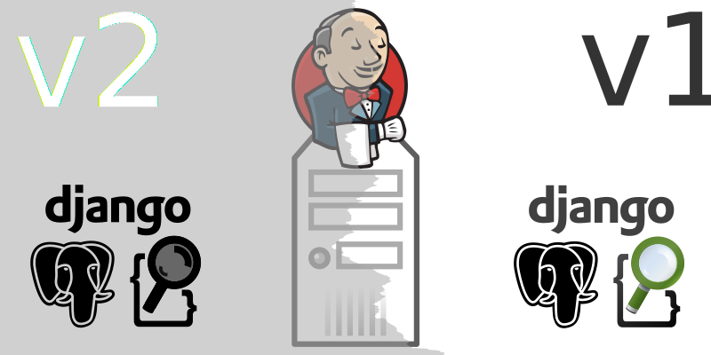The Deploy
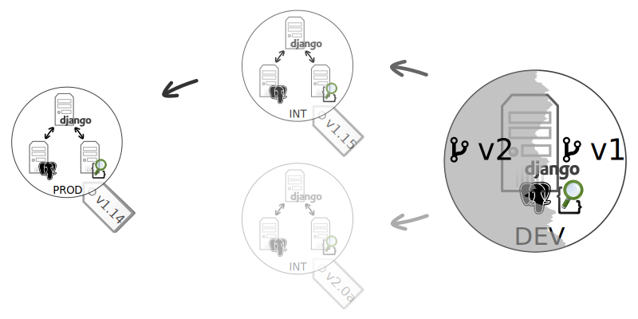Why not Docker ?
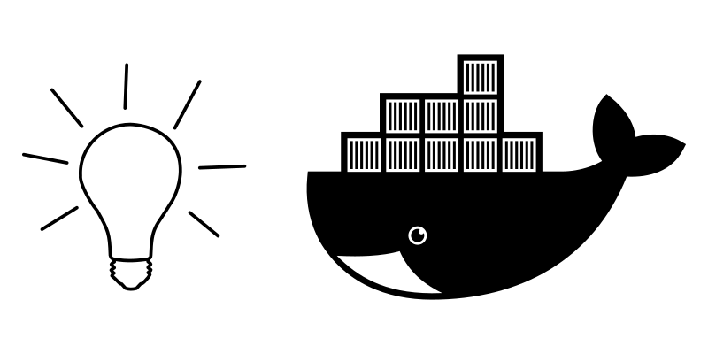The Dev
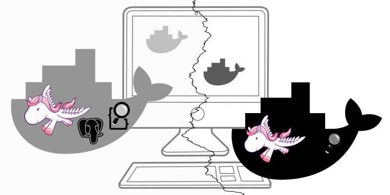The CI
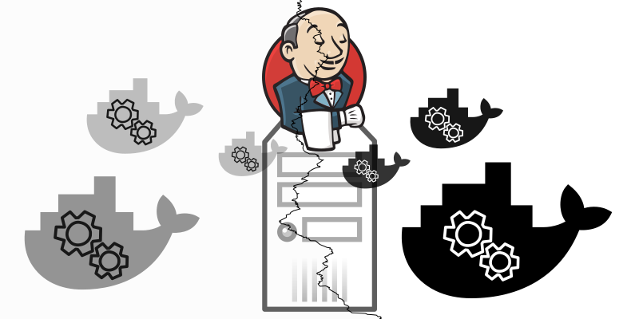The Deploy
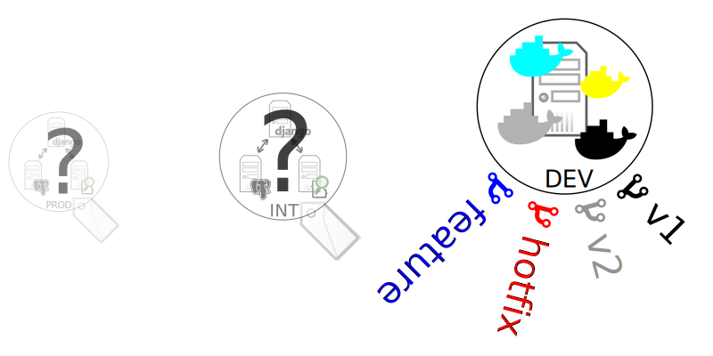But How ?
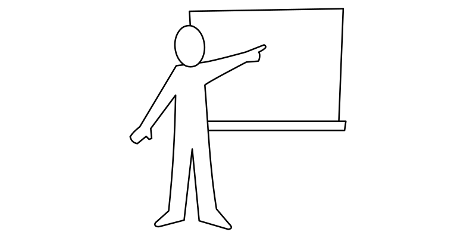The Pull
$ docker pull debian:latest
The Build
$ echo "
> FROM debian:latest
> RUN apt-get update
> RUN apt-get install -y python
> CMD python --version
> " > Dockerfile
$ docker build -t python .
The Run
$ docker run -it python
Python 2.7.3
The Push
$ docker run -p 5000:5000 registry
$ export TAG=localhost:5000/toopy/python
$ docker tag python $TAG
$ docker push $TAG
The Demo
Questions
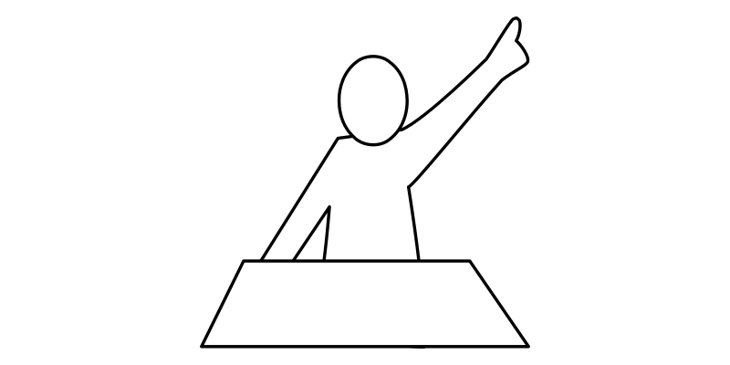